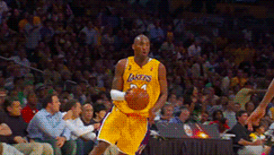

Najveće zvijezde košarke
Najveće zvijezde košarke su teško definirati, jer je to subjektivno pitanje i ovisi o mnogim faktorima poput statistike, uspjeha, utjecaja na igru, popularnosti i mnogim drugim čimbenicima. Ipak, neki od najvećih košarkaša svih vremena, koji se često spominju u takvim raspravama, su:
- Michael Jordan - smatra se jednim od najboljih košarkaša svih vremena zbog svoje izvanredne igre u napadu i obrani, osvajanja šest NBA prstenova i brojnih individualnih priznanja.
- LeBron James - jedan od najdominantnijih igrača u modernoj košarci, ima 4 NBA prstena i brojne rekorde u karijeri.
- Kobe Bryant - preminuli košarkaš, smatran je jednim od najboljih strijelaca u povijesti NBA lige i osvojio je pet NBA prstena.
- Wilt Chamberlain - legendarni košarkaš iz 60-ih godina, zabilježio je neke od najimpresivnijih statistika u povijesti košarke.
- Kareem Abdul-Jabbar - najbolji strijelac u povijesti NBA lige s preko 38.000 poena, osvojio je 6 NBA prstenova i 6 puta je bio izabran za najkorisnijeg igrača (MVP) NBA lige.

×


×